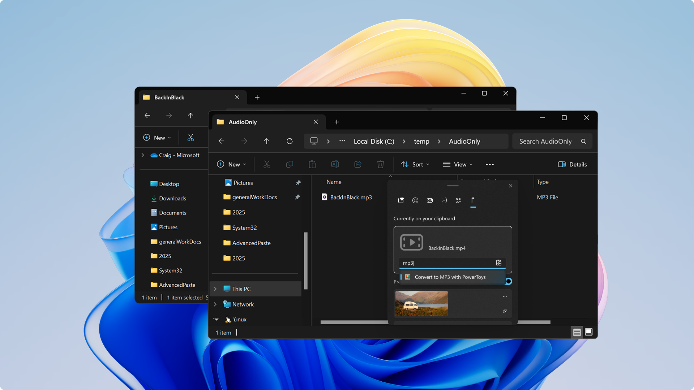
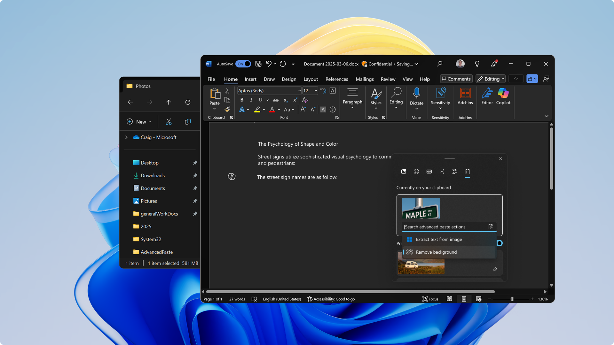
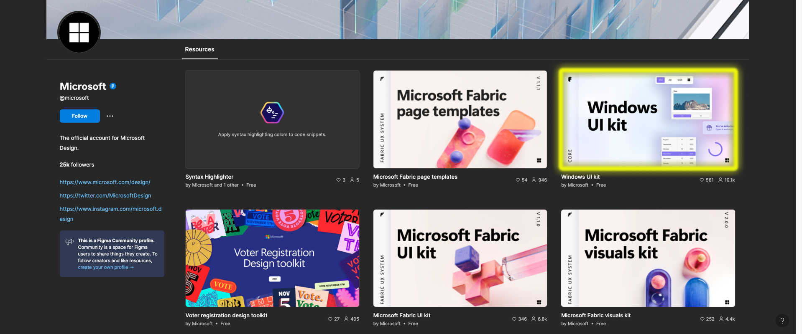

Product Designer
From education products like Speaker Coach and Career Coach, to Windows products like Expressive Input Panel and Copilot, I had the opportunity to explore various consumer and enterprise design challenges through both a deep vertical and across horizontal ecosystem lens. I collaborated directly with talented researchers, product managers, and engineers on 0 to 1 products as well as new features for existing products.
Advanced Paste
A beloved feature of the PowerToys product, Advanced Paste got so much traction we decided to bring it into the core Windows experience. This AI feature allows you to copy any content, transform it, and then paste it. Some powerful uses include removing background from images, translating text to a different language, or transcribing a video quickly on the fly, right before pasting.
 Windows UI Library
An ongoing effort outside of product work was maintaining our community facing Figma library for Windows app developers and designers. This included keeping the library up to date with the latest Figma best practices and adding in new components.
